swimwear 22 images
 krea 2
krea 2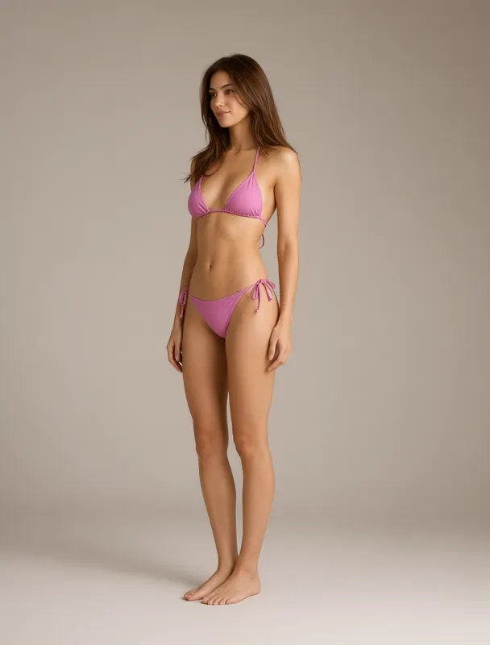
qwen image 2.1triangle bikini
a full color full length fashion photograph in three-quarter view, with the whole body in frame from head to feet, lit by soft even studio light against a plain warm gray backdrop. the subject is a slim mixed race woman of about twenty five with light skin. her hair is chestnut brown, long blowout layers. she wears a triangle bikini. she stands relaxed, turned three quarters toward the left side of the frame, and gazes off to the left side of the frame, away from the camera.
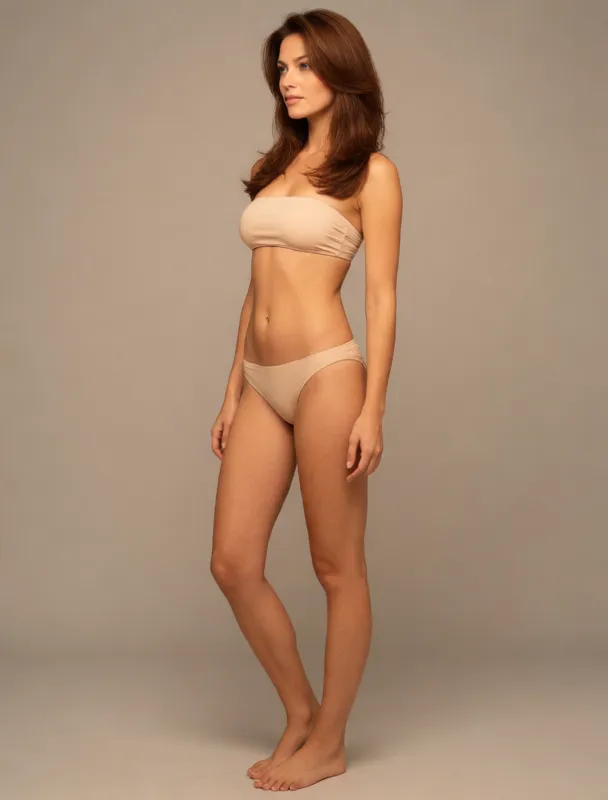
krea 2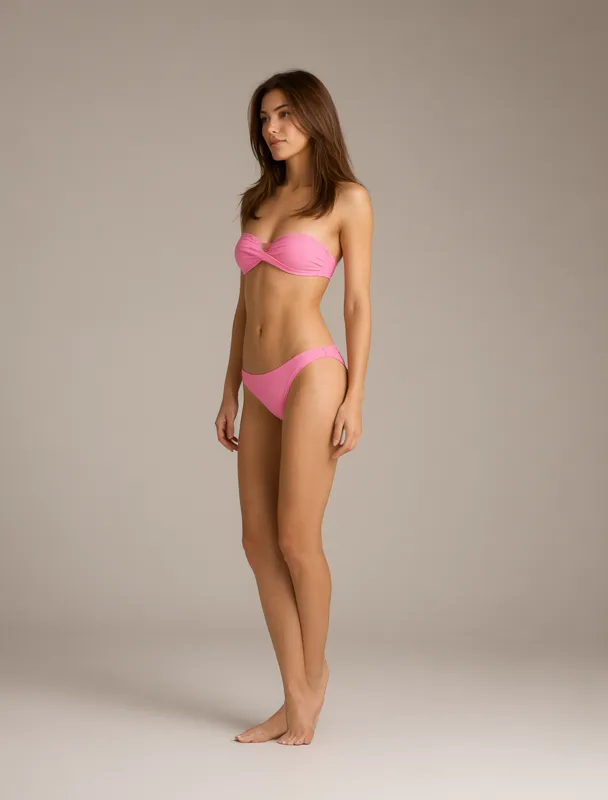
qwen image 2.1bandeau bikini
a full color full length fashion photograph in three-quarter view, with the whole body in frame from head to feet, lit by soft even studio light against a plain warm gray backdrop. the subject is a slim mixed race woman of about twenty five with light skin. her hair is chestnut brown, long blowout layers. she wears a bandeau bikini. she stands relaxed, turned three quarters toward the left side of the frame, and gazes off to the left side of the frame, away from the camera.
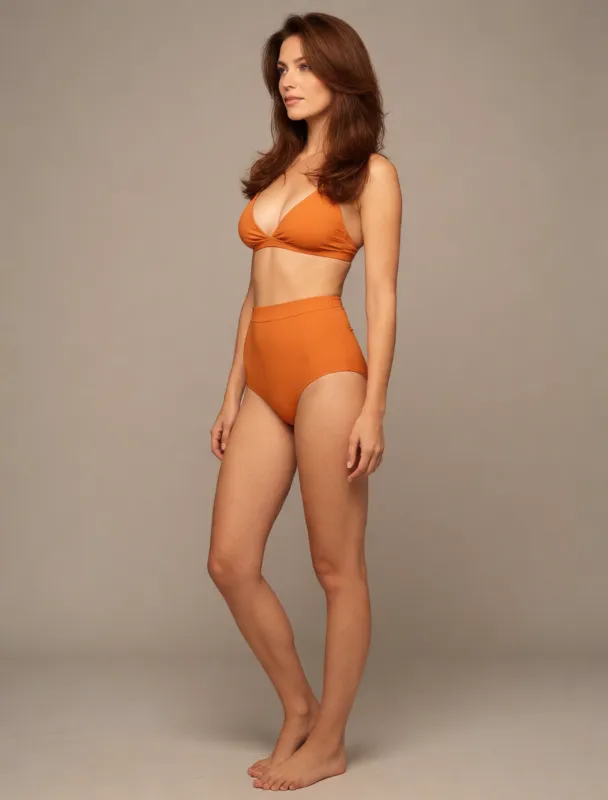
krea 2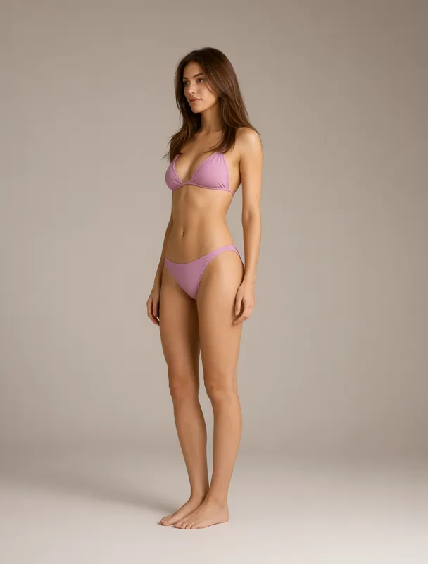
qwen image 2.1high waisted bikini
a full color full length fashion photograph in three-quarter view, with the whole body in frame from head to feet, lit by soft even studio light against a plain warm gray backdrop. the subject is a slim mixed race woman of about twenty five with light skin. her hair is chestnut brown, long blowout layers. she wears a high-waisted bikini. she stands relaxed, turned three quarters toward the left side of the frame, and gazes off to the left side of the frame, away from the camera.
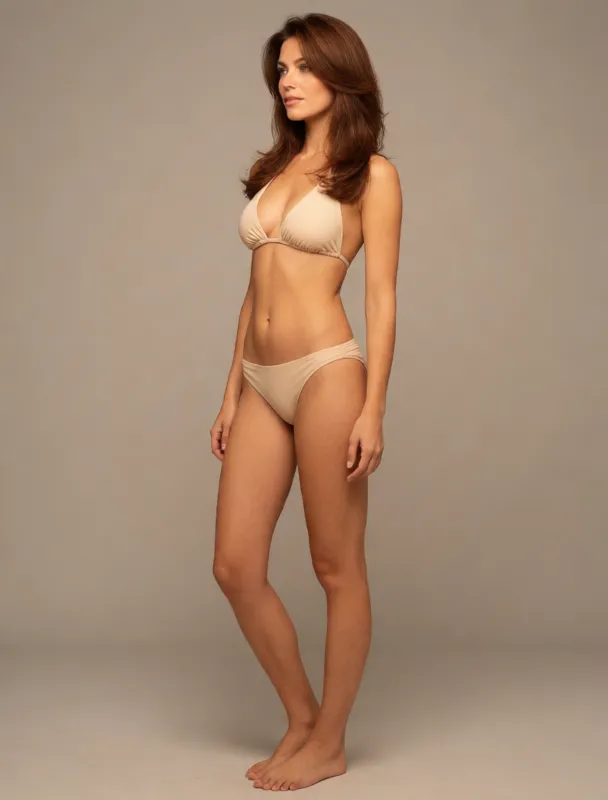
krea 2halter bikini
a full color full length fashion photograph in three-quarter view, with the whole body in frame from head to feet, lit by soft even studio light against a plain warm gray backdrop. the subject is a slim mixed race woman of about twenty five with light skin. her hair is chestnut brown, long blowout layers. she wears a halter bikini. she stands relaxed, turned three quarters toward the left side of the frame, and gazes off to the left side of the frame, away from the camera.
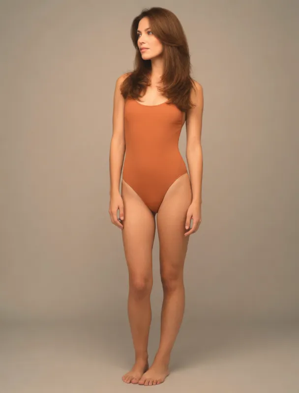
krea 2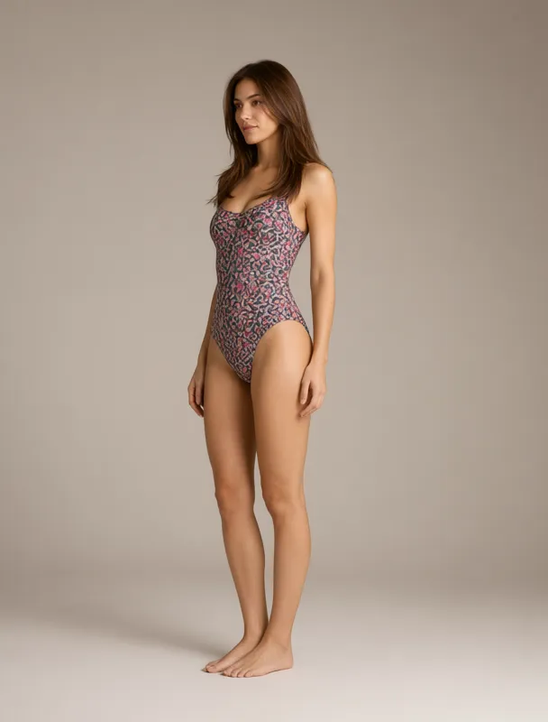
qwen image 2.1one piece swimsuit
a full color full length fashion photograph in three-quarter view, with the whole body in frame from head to feet, lit by soft even studio light against a plain warm gray backdrop. the subject is a slim mixed race woman of about twenty five with light skin. her hair is chestnut brown, long blowout layers. she wears a one-piece swimsuit. she stands relaxed, turned three quarters toward the left side of the frame, and gazes off to the left side of the frame, away from the camera.
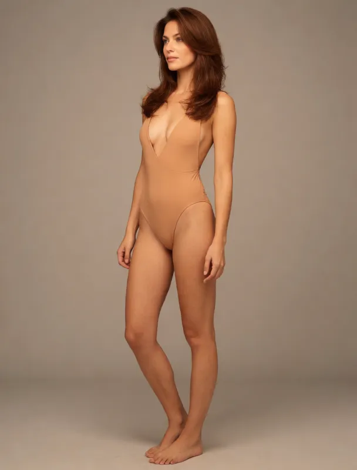
krea 2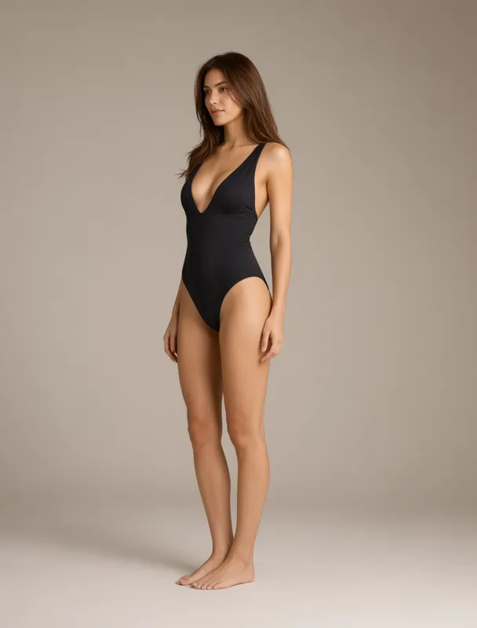
qwen image 2.1plunging one piece swimsuit
a full color full length fashion photograph in three-quarter view, with the whole body in frame from head to feet, lit by soft even studio light against a plain warm gray backdrop. the subject is a slim mixed race woman of about twenty five with light skin. her hair is chestnut brown, long blowout layers. she wears a plunging one-piece swimsuit. she stands relaxed, turned three quarters toward the left side of the frame, and gazes off to the left side of the frame, away from the camera.
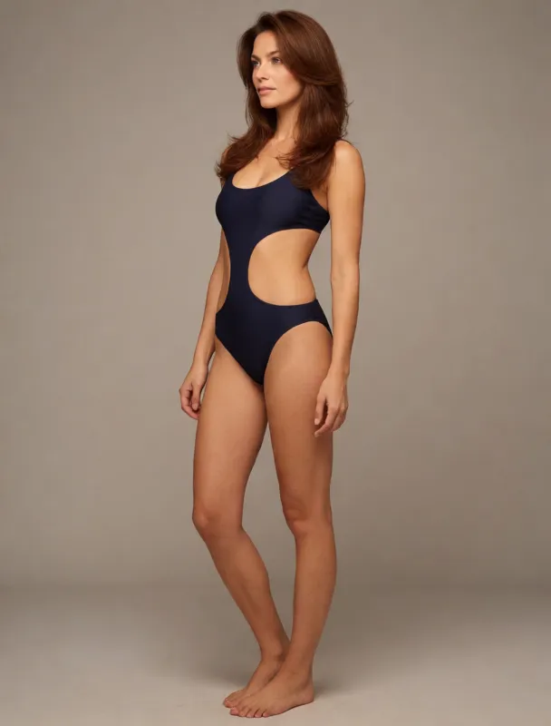
krea 2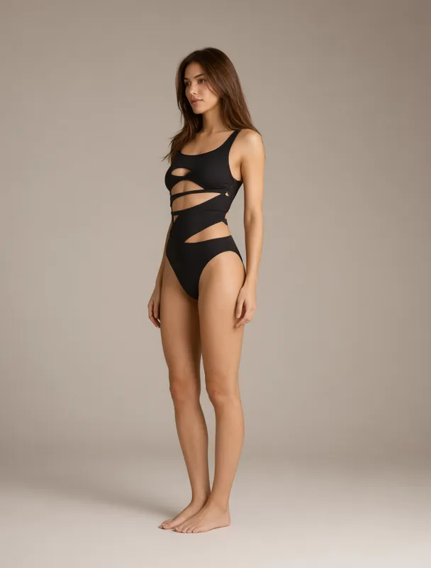
qwen image 2.1cutout one piece swimsuit
a full color full length fashion photograph in three-quarter view, with the whole body in frame from head to feet, lit by soft even studio light against a plain warm gray backdrop. the subject is a slim mixed race woman of about twenty five with light skin. her hair is chestnut brown, long blowout layers. she wears a cutout one-piece swimsuit. she stands relaxed, turned three quarters toward the left side of the frame, and gazes off to the left side of the frame, away from the camera.
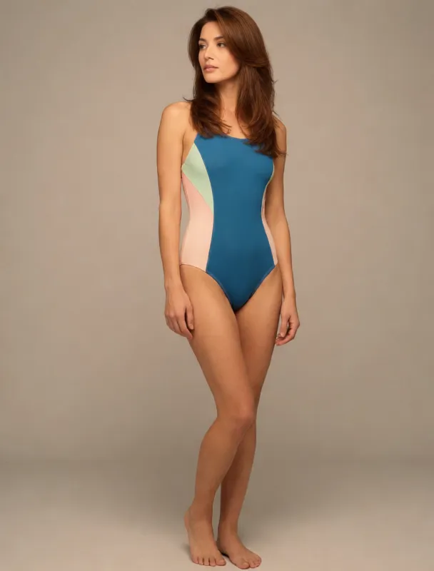
krea 2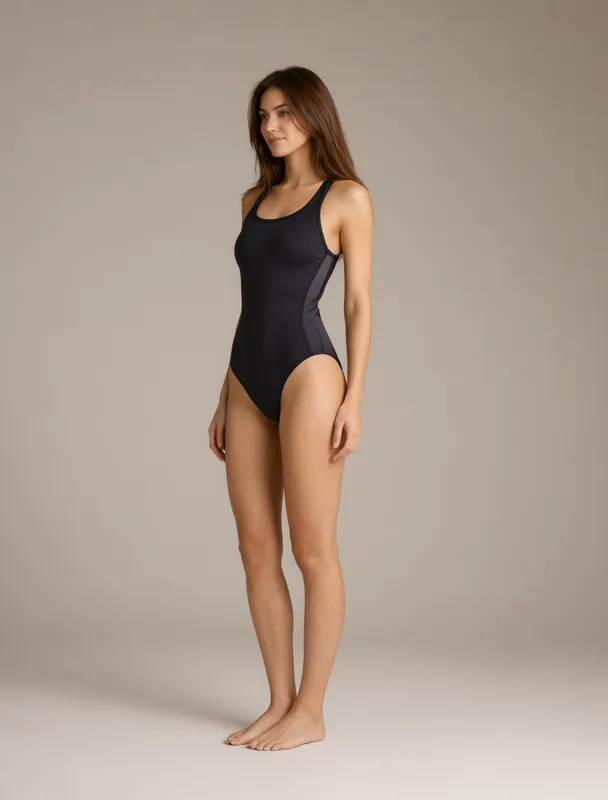
qwen image 2.1sporty racerback swimsuit
a full color full length fashion photograph in three-quarter view, with the whole body in frame from head to feet, lit by soft even studio light against a plain warm gray backdrop. the subject is a slim mixed race woman of about twenty five with light skin. her hair is chestnut brown, long blowout layers. she wears a sporty racerback swimsuit. she stands relaxed, turned three quarters toward the left side of the frame, and gazes off to the left side of the frame, away from the camera.
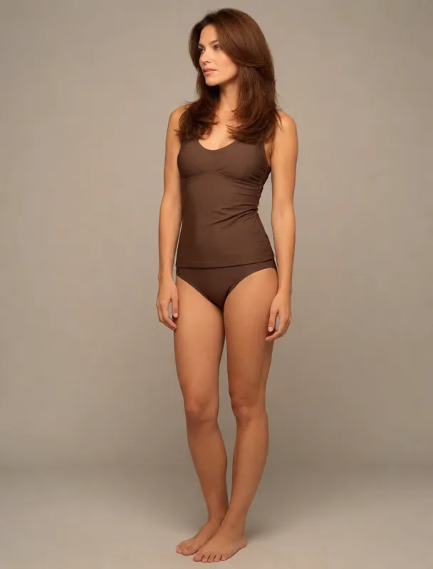
krea 2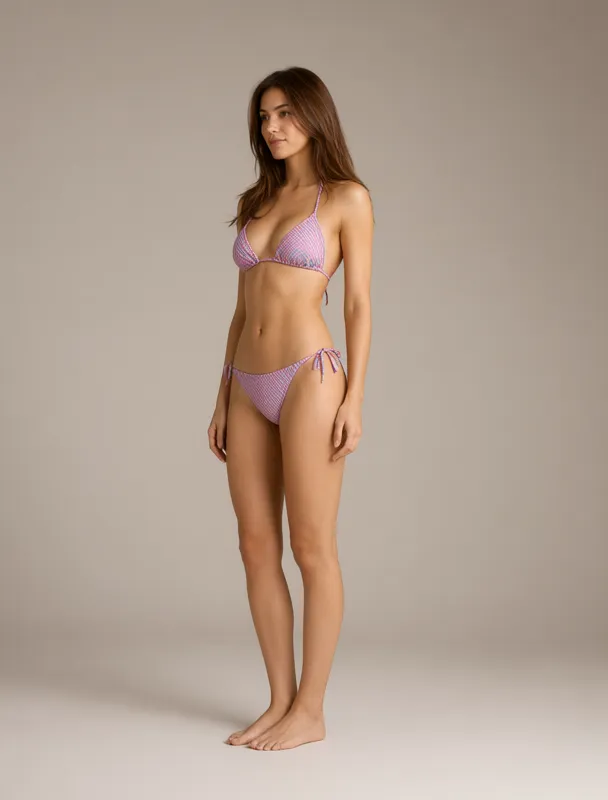
qwen image 2.1tankini
a full color full length fashion photograph in three-quarter view, with the whole body in frame from head to feet, lit by soft even studio light against a plain warm gray backdrop. the subject is a slim mixed race woman of about twenty five with light skin. her hair is chestnut brown, long blowout layers. she wears a tankini. she stands relaxed, turned three quarters toward the left side of the frame, and gazes off to the left side of the frame, away from the camera.
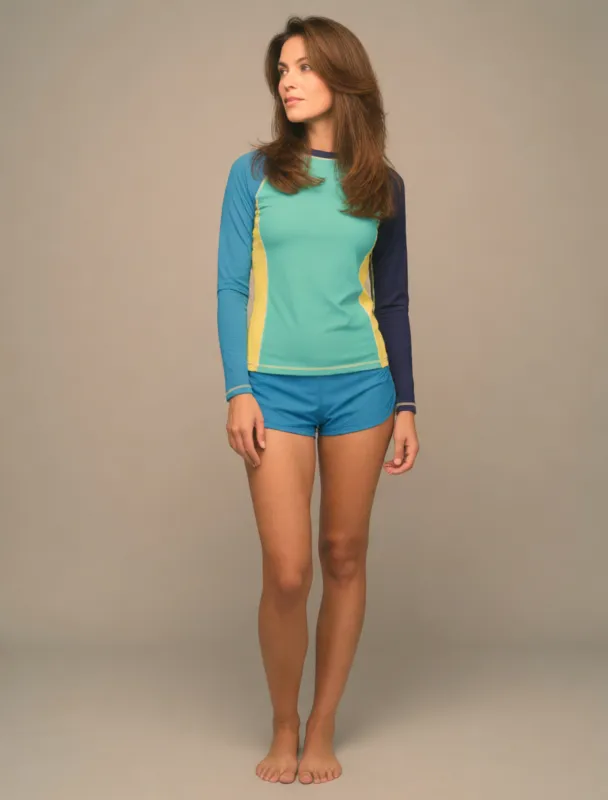
krea 2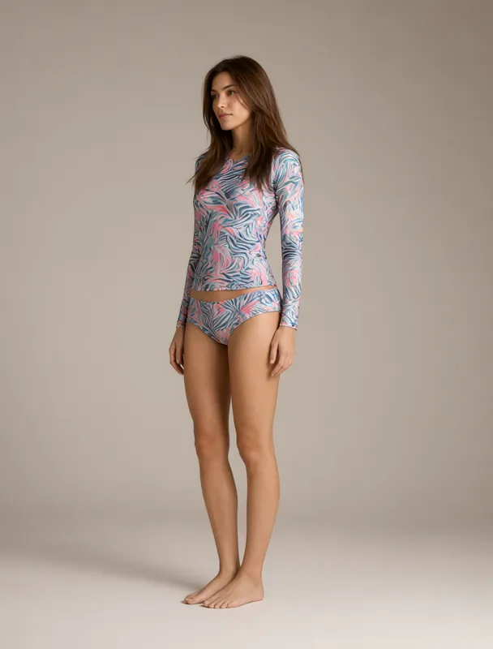
qwen image 2.1rash guard with swim shorts
a full color full length fashion photograph in three-quarter view, with the whole body in frame from head to feet, lit by soft even studio light against a plain warm gray backdrop. the subject is a slim mixed race woman of about twenty five with light skin. her hair is chestnut brown, long blowout layers. she wears a rash guard with swim shorts. she stands relaxed, turned three quarters toward the left side of the frame, and gazes off to the left side of the frame, away from the camera.
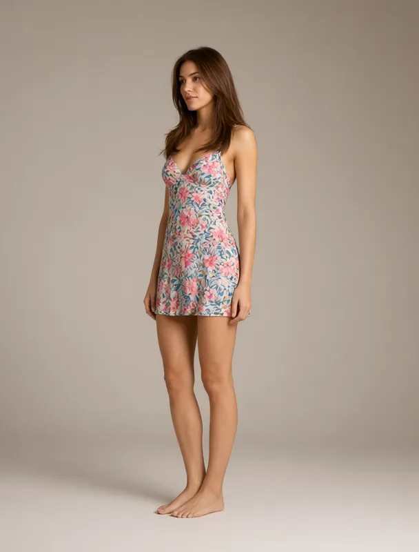
qwen image 2.1swim dress
a full color full length fashion photograph in three-quarter view, with the whole body in frame from head to feet, lit by soft even studio light against a plain warm gray backdrop. the subject is a slim mixed race woman of about twenty five with light skin. her hair is chestnut brown, long blowout layers. she wears a swim dress. she stands relaxed, turned three quarters toward the left side of the frame, and gazes off to the left side of the frame, away from the camera.
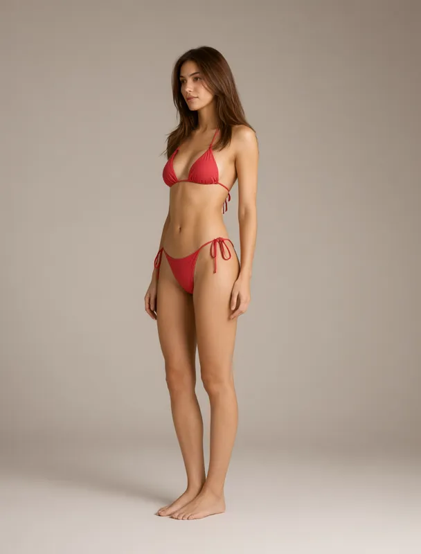
qwen image 2.1monokini
a full color full length fashion photograph in three-quarter view, with the whole body in frame from head to feet, lit by soft even studio light against a plain warm gray backdrop. the subject is a slim mixed race woman of about twenty five with light skin. her hair is chestnut brown, long blowout layers. she wears a monokini. she stands relaxed, turned three quarters toward the left side of the frame, and gazes off to the left side of the frame, away from the camera.